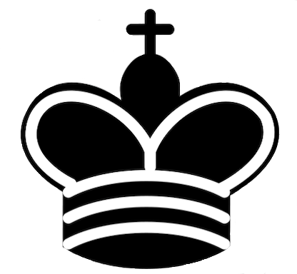

Some random information

The king is the most vital piece in chess. It moves one square at a time, can go in
any direction, and must be protected while threatening opponents

The queen is the most powerful piece in chess. It can move any number of squares
vertically, horizontally, or diagonally, combining the powers of the rook and bishop

The rook is a powerful piece in chess. It moves horizontally or vertically across
any number of squares, capturing opponents and aiding in castling

The bishop is a vital and versatile chess piece that moves diagonally, capturing
enemies by landing on their squares. It controls multiple squares, making it
strategically potent

The knight in chess is a unique piece. It moves in an L-shaped pattern: two squares
vertically and one square horizontally, or vice versa. It can jump over other pieces

The pawn is the most numerous and weakest piece in chess. It moves one square
directly forward, captures diagonally, and can advance two squares on its first move